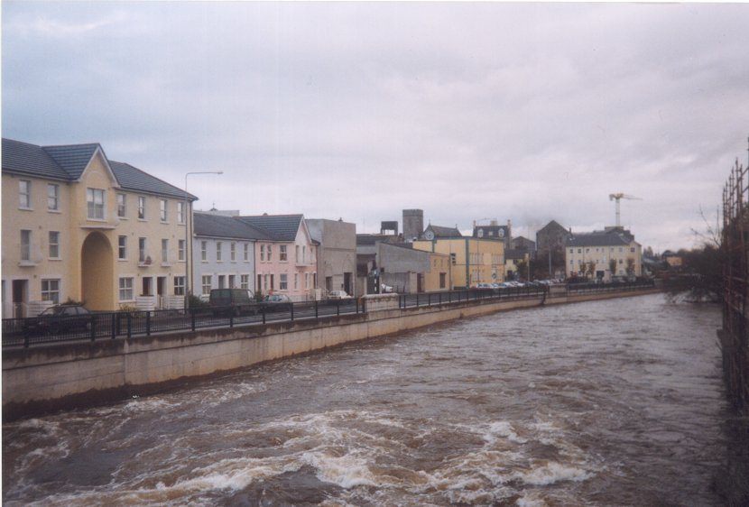

There was continuous low atmospheric pressure throughout the period of the flooding. When the pressure pattern is such, that strong winds act on a stretch of water over a long distance, they ‘pile up’ water against an adjacent coastline, which causes an increase in sea level of several feet. The potential rise in water level due to the pressure drop is quite significant.
The attack on the planning policy of Clonmel has been reiterated due to the recent flooding and an accusing finger has been pointed at the planners and developers for increased urbanisation on traditional floodplains.
1. The development of the Treatment Plant along the Waterford Road is occupying a once 6-acre floodplain.
2. The building of the houses at Cascade Park
And
3. The narrowing of the river Suir channel have all contributed to the flooding.
4. The developments along the quay.

The Quay’s Clonmel
<
Previous> <Index> <Next>